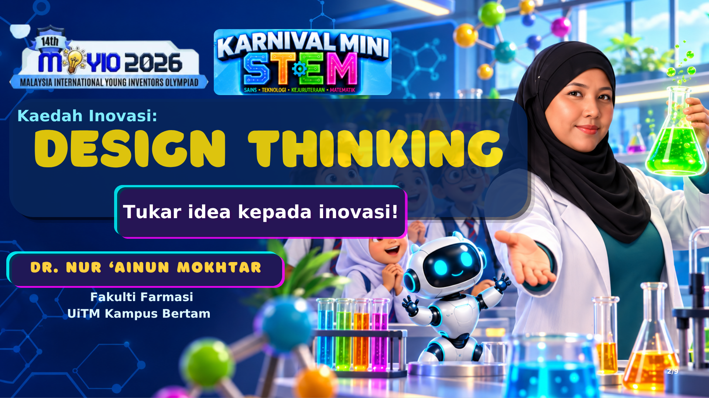
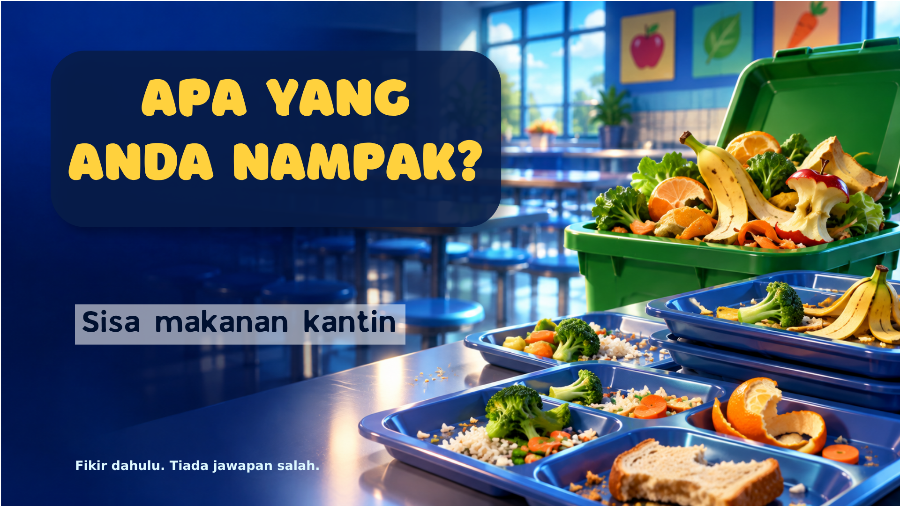
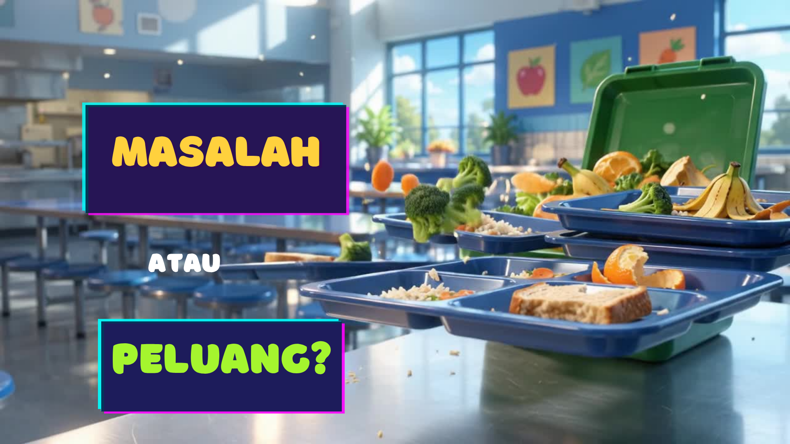
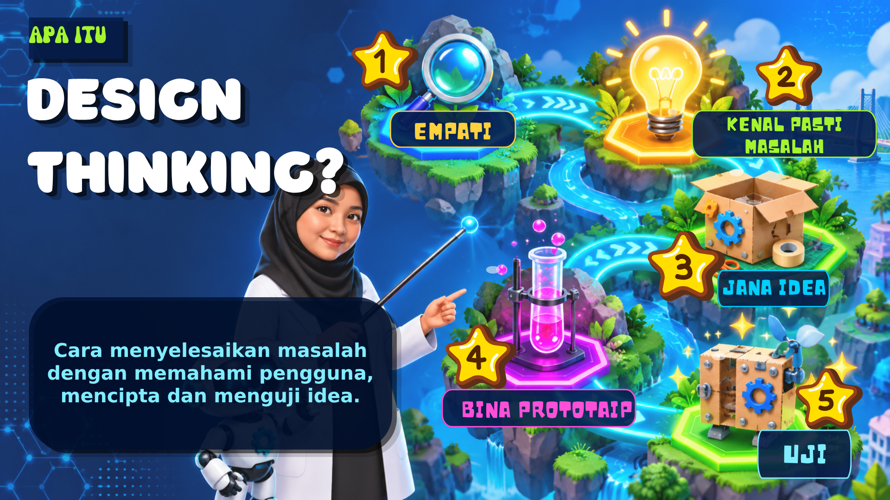
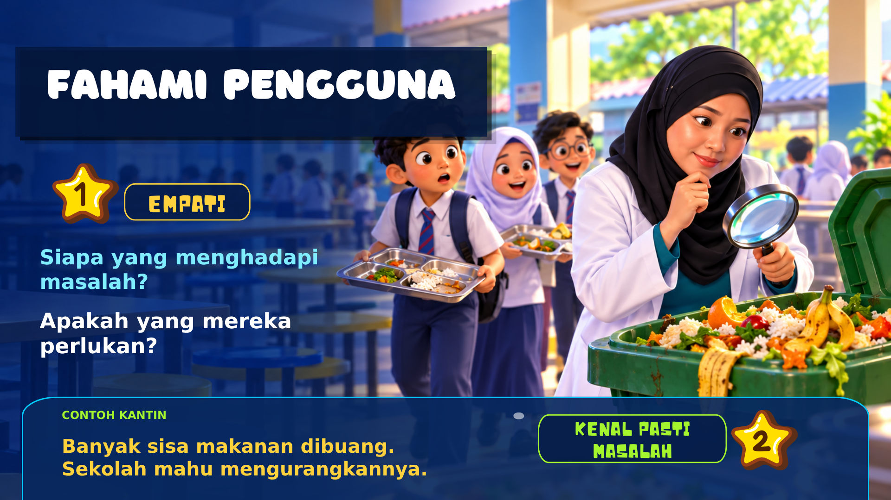
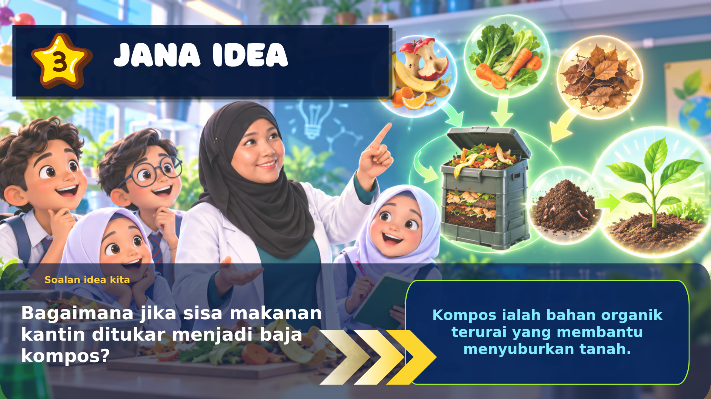
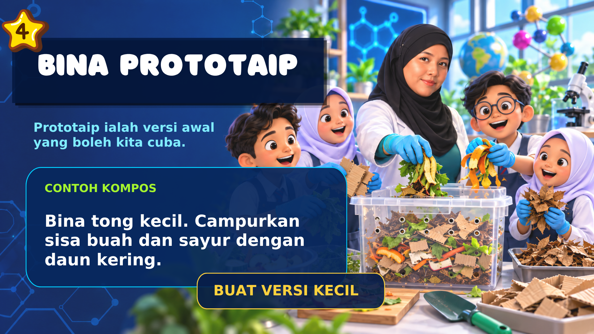
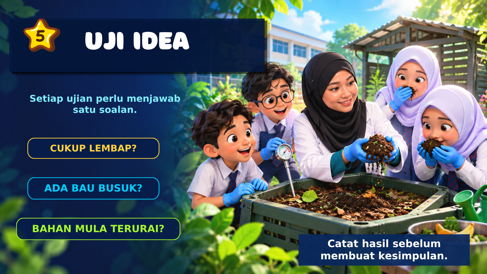
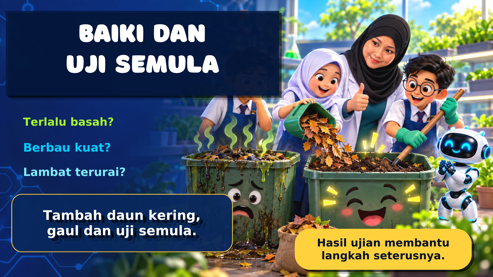
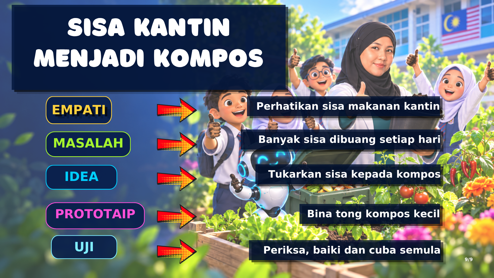

14th MyIO 2026 · Karnival Mini STEM
Kaedah Inovasi: Design Thinking
Tukar idea kepada inovasi! · Dr. Nur ‘Ainun Mokhtar · Fakulti Farmasi, UiTM Kampus Bertam
01
Tajuk: Design Thinking

- Kaedah inovasi: Design Thinking
- Tukar idea kepada inovasi!
- Dr. Nur ‘Ainun Mokhtar, Fakulti Farmasi, UiTM Kampus Bertam
Aktiviti: Tulis satu perkataan yang anda fikir bermaksud “inovasi”. Simpan untuk dibandingkan di akhir sesi.
02
Apa yang anda nampak?

- Gambar: sisa makanan kantin
- Fikir dahulu. Tiada jawapan salah.
Aktiviti: Senaraikan tiga perkara yang anda nampak dalam gambar — hanya pemerhatian, belum penyelesaian.
03
Masalah atau peluang?

- MASALAH … atau … PELUANG?
Aktiviti: Ambil satu pemerhatian dari slaid 02 dan tulis dua kali — sekali sebagai masalah, sekali sebagai peluang.
04
Apa itu Design Thinking?

- Cara menyelesaikan masalah dengan memahami pengguna, mencipta dan menguji idea.
- Lima langkah: 1 Empati · 2 Kenal pasti masalah · 3 Jana idea · 4 Bina prototaip · 5 Uji
Aktiviti: Lukis peta lima langkah itu tanpa melihat slaid, kemudian semak semula.
05
Langkah 1–2: Fahami pengguna

- 1 Empati: Siapa yang menghadapi masalah? Apakah yang mereka perlukan?
- Contoh kantin: Banyak sisa makanan dibuang. Sekolah mahu mengurangkannya.
- Seterusnya: 2 Kenal pasti masalah
Aktiviti: Temu bual seorang rakan atau pekerja kantin dengan dua soalan itu. Catat jawapan mereka dengan perkataan mereka sendiri.
06
Langkah 3: Jana idea

- Soalan idea kita: Bagaimana jika sisa makanan kantin ditukar menjadi baja kompos?
- Kompos ialah bahan organik terurai yang membantu menyuburkan tanah.
Aktiviti: Tulis lima idea “Bagaimana jika…” dalam tiga minit. Bulatkan satu yang paling mudah dicuba di sekolah.
07
Langkah 4: Bina prototaip

- Prototaip ialah versi awal yang boleh kita cuba.
- Contoh kompos: Bina tong kecil. Campurkan sisa buah dan sayur dengan daun kering.
- Prinsip: buat versi kecil.
Aktiviti: Senaraikan bahan yang anda perlukan dan lakar tong kompos anda. Hadkan kepada bahan yang sudah ada di sekolah.
08
Langkah 5: Uji idea

- Setiap ujian perlu menjawab satu soalan.
- Cukup lembap? · Ada bau busuk? · Bahan mula terurai?
- Catat hasil sebelum membuat kesimpulan.
Aktiviti: Bina jadual pemerhatian tujuh hari dengan tiga soalan ujian itu. Catat satu baris setiap hari.
09
Baiki dan uji semula

- Terlalu basah? Berbau kuat? Lambat terurai?
- Tambah daun kering, gaul dan uji semula.
- Hasil ujian membantu langkah seterusnya.
Aktiviti: Pilih satu masalah dari jadual anda, tulis pembetulan yang anda buat, dan ramalkan hasilnya sebelum uji semula.
10
Ringkasan: sisa kantin menjadi kompos

| Langkah | Dalam projek kompos |
|---|
| Empati | Perhatikan sisa makanan kantin |
| Masalah | Banyak sisa dibuang setiap hari |
| Idea | Tukarkan sisa kepada kompos |
| Prototaip | Bina tong kompos kecil |
| Uji | Periksa, baiki dan cuba semula |
Aktiviti: Isi jadual yang sama untuk projek anda sendiri — satu baris bagi setiap langkah, satu ayat sahaja.
11
Permainan 1: Susun langkah
Tarik & lepas · 4 minit · berkumpulan · versi interaktif pada slaid 13
Potong lima jalur di bawah, gaulkan, kemudian susun mengikut urutan langkah Design Thinking yang betul.
Jana idea
Uji
Empati
Bina prototaip
Kenal pasti masalah
Aktiviti: Selepas menyusun, tulis satu sebab mengapa Empati mesti didahulukan.
12
Permainan 2: Kad istilah
Kad selak · 3 minit · berpasangan · versi interaktif pada slaid 14
Lipat jadual ini pada garis tengah. Rakan menyebut istilah; anda cuba beri maksudnya sebelum melihat jawapan.
| Istilah | Maksud |
|---|
| Empati | Memahami perasaan dan keperluan pengguna. |
| Masalah | Pernyataan jelas tentang perkara yang perlu diselesaikan. |
| Idea | Banyak cadangan penyelesaian, belum dinilai. |
| Prototaip | Versi awal yang murah dan cepat untuk dicuba. |
| Uji | Mencuba prototaip dan mencatat hasil sebenar. |
| Penambah baikan berterusan | Membaiki dan mencuba semula selepas melihat hasil ujian. |
Aktiviti: Pilih dua istilah dan tulis satu contoh sendiri bagi setiap satu.
13
Permainan 3: Suai Pilih
Suai pilih · 4 minit · individu · versi interaktif pada slaid 15
Padankan setiap langkah dengan satu tindakan projek kantin. Tulis huruf yang betul dalam petak nombor.
1Empati
2Kenal pasti masalah
3Jana idea
4Bina prototaip
5Uji
ABina satu tong kompos kecil daripada baldi terpakai.
BPeriksa bau dan kelembapan kompos selama tujuh hari.
CTemu bual pekerja kantin tentang sisa makanan.
DSenaraikan sepuluh cara menggunakan semula sisa makanan.
ETulis: banyak makanan dibuang setiap hari di kantin.
Aktiviti: Cipta satu tindakan tambahan bagi langkah Uji untuk projek anda sendiri.
14
Permainan 4: Silang kata
Silang kata · 5 minit · berpasangan · versi interaktif pada slaid 16
- 1 melintang — Memahami perasaan dan keperluan pengguna. (6 huruf)
- 2 menegak — Versi awal yang boleh dicuba. (9 huruf)
- 3 melintang — Mencuba prototaip dan mencatat hasilnya. (3 huruf)
- 4 menegak — Cadangan penyelesaian yang dijana banyak-banyak. (4 huruf)
- 5 melintang — Perkara yang perlu diselesaikan. (7 huruf)
Aktiviti: Tulis satu ayat yang menggunakan tiga daripada lima perkataan itu.
15
Penutup
“Innovation is the ability to see change as an opportunity – not a threat.”Steve Jobs
Aktiviti: Bandingkan perkataan “inovasi” anda dari bahagian 01 dengan petikan ini. Apa yang berubah?